本文件属于「广州四条主题旅游路线资料包」。配套图片见同目录
图片/文件夹。 数据来源：原项目广州海上丝绸之路旅游路线/新旅游路径.html、广州海上丝绸之路旅游路线/交通方式备注.html。 共 4 个主题日、15 处景点：精华景点 11 处，拓展景点 4 处。
| 日程 | 主题 | 景点数 |
|---|---|---|
| Day 1 | 秦汉起源与古代港口（公元前200年 - 公元6世纪） | 4 |
| Day 2 | 唐宋繁盛与市舶司文化（7世纪 - 13世纪） | 4 |
| Day 3 | 明清贸易与十三行时代（14世纪 - 19世纪） | 4 |
| Day 4 | 现代航运与海丝文化传承（20世纪至今） | 3 |
返回：资料包说明
路线顺序：南海神庙（波罗庙） → 黄埔古港遗址 → 光孝寺 → 西汉南越王宫博物馆
简介：中国四大海神庙中唯一完整保存的官方祭海神庙，海上丝绸之路重要精神象征
详细介绍
总述：中国四大海神庙中唯一完整保存下来的官方祭海神庙，是海上丝绸之路船舶起航前祭祀海神的重要场所，古代海上丝绸之路重要精神象征，见证古代 "夷舶往来，香火不绝" 的盛况，有"南方碑林"之称。
分述：南海神庙又称波罗庙。594年，隋文帝下诏建四海神庙祭四海，在广州南海建南海神祠，而火神祝融也正式被尊任为南海神庙供奉的"海神"，距今已有1400年的历史。726年，张九龄奉唐玄宗之命，以特遣持节的身份到广州祭祀南海神，这是南海神庙历史上一次重要的祭祀，开创了皇帝派重臣南来代祭南海神之先河。唐代以后历经扩建重修，地方官每年代表皇帝至此举行祭典成为惯例，据记载，这些活动的资金有一部分来源于海上贸易的收入。每次重修、祭典，或是官员贬谪经过，都会在神庙中刻碑文，因此南海神庙又被称为"南方碑林"。古时庙前有码头，人们按例到庙拜祭，并在庙旁的扶胥镇交易。以此为起点的古代海上丝绸之路通达东南亚、西非和北非，明清时更远达欧美。洋船出入广州，南海神庙是必经之地，因此这里也成为中外商旅祭拜的圣地，著名的"波罗诞"庙会是国家级非物质文化遗产。可以说，南海神庙是古代海上交通贸易的重要遗址。
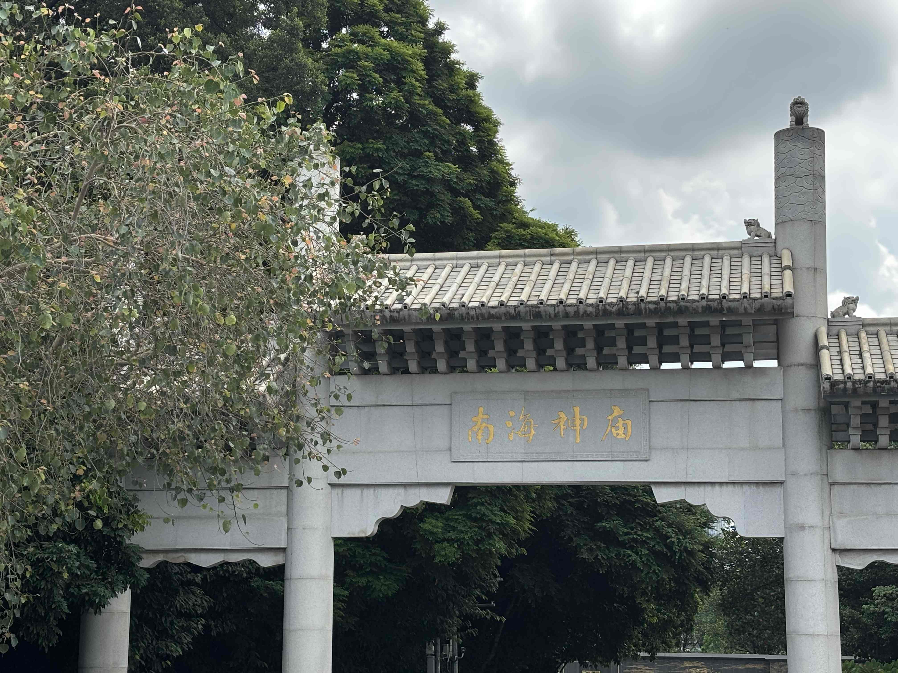
简介：明清时期广州对外贸易核心港口，清政府“一口通商”政策后外国商船唯一停泊港
详细介绍
总述：为明清时期广州对外贸易的核心港口，是清政府实施"一口通商"政策后外国商船唯一停泊港，是古代海上丝绸之路的重要发祥地之一，见证了"哥德堡号"等著名商船的往来。
分述：黄埔古港于北宋时期开村，原名"凤浦"，南宋时已成为海舶停泊之地。明代因扶胥港淤积，外贸港口转移至现址，至清代发展为贸易重镇。1757年，清政府限定广州"一口通商"，黄埔古港成为当时中国唯一对外通商港口，是中外交往的第一站，粤海关在此设立黄埔挂号口监管贸易。据记载，码头上设有海关税馆、夷务所、买办馆和永靖营，分别负责征税、办理洋船贸易手续、后勤服务、防卫等职责，黄埔岛上居民有几千人，充当买办、装卸工、修船匠等与洋船相关的工作；"一口通商"期间停泊商船达5107艘，这些海船在黄埔靠岸后，船长和商贸负责人就会乘小艇前往广州十三行商区，休息时则在长洲岛和深井岛，现在的长洲岛上，仍保留着当年客死中国的外国人墓地。19世纪中叶，因航道淤塞，港口功能逐渐迁至长洲岛。莲花塔、赤岗塔、琶洲塔与黄埔港的壮观帆影相结合，是当时广州作画的常见题材，也是广州传奇商贸历史的最好见证。现存古码头、古榕树和粤海第一关纪念馆，可以说，黄埔古港是一座活的"海上丝绸之路"博物馆。
简介：广州现存最古老佛教寺庙之一，佛教通过海路传入中国并在岭南传播的重要见证
详细介绍
总述：广州现存最古老的佛教寺庙之一。历史上多位高僧（如达摩、鉴真）曾在此驻锡弘法。它是佛教通过海路传入中国并在岭南传播的重要见证，是海丝文化中宗教文化交流的重要组成部分。
分述：光孝寺始建于三国东吴时期（约公元220-265年），初为南越王赵佗玄孙赵建德的故宅，后改建为佛寺，名"王园寺"。寺内现存建筑多为明清遗构，但格局仍保留唐宋风范，"光孝菩提"更是广州古代八景之一。作为海上丝绸之路的重要节点，光孝寺见证了佛教经海路传入中国的历程：印度高僧求那跋陀罗、真谛等曾在此译经传法；唐代鉴真和尚第五次东渡日本前亦驻锡于此。寺内瘗发塔为纪念六祖慧能削发受戒而建，东西铁塔则是中国现存最古老的铁塔，彰显古代铸造工艺之精。历经千年沧桑，光孝寺融汇了佛教建筑、雕塑、碑刻等艺术精华，其"诃林"（古诃子树林）与殿宇相映成趣，堪称岭南佛教文化活化石，至今仍是信众朝圣与游客探古的圣地。
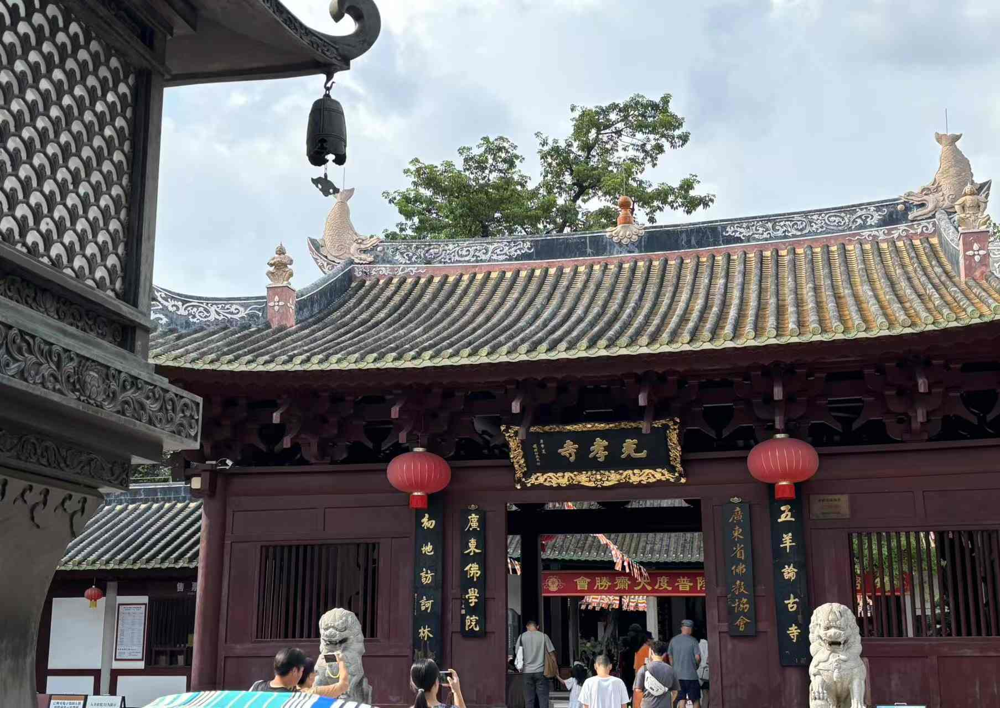
简介：广州城市发展原点，出土大量海外舶来品，是海上丝绸之路最早实物证据之一
详细介绍
总述：虽然比秦汉起源点稍晚，但这里是广州城市发展的原点，其考古发掘出土了大量舶来品（如波斯银盒、非洲象牙、红海乳香等），是海上丝绸之路贸易在岭南地区最早的实物证据之一，比南海神庙更早。
分述：（1）过程：南越国，亦称南粤国，是秦末至西汉时期位于中国岭南地区的一个政权。秦末，南海郡尉赵佗乘秦亡之际，封关绝道，兼并岭南的桂林郡、象郡。汉高祖三年（公元前204年）正式建立南越国（南粤国），定都番禺。汉高祖十一年（公元前196年），南越国成为汉朝的藩属国。元鼎四年（公元前113年），南越丞相吕嘉发动叛乱，杀死南越王赵兴，立术阳侯赵建德为南越王。元鼎五年（公元前112年）秋，汉武帝刘彻发动对南越国的战争，于元鼎六年（公元前111年）冬灭亡南越国。一共历经五任国王，享国九十三年。
（2）疆域：南越国全盛时疆域包括今广东、广西（大部分地区）、福建（一小部分地区）、海南、香港、澳门和越南（北部、中部的大部分地区）。
（3）意义：南越国是岭南历史上第一个完整的王朝政权，它奠定了今日岭南的基本范围。南越国建立伊始，赵佗实施"和辑百越"政策，引入中原农耕技术与先进文化，使岭南地区迅速从百越征战、刀耕火种的氏族社会平稳进入农耕文明时代，同时又将异域文化和海洋文化引进岭南以至中原地区，开启岭南文明千年辉煌。同时，南越国时期海上交往为海上丝绸之路的形成奠定了基础。
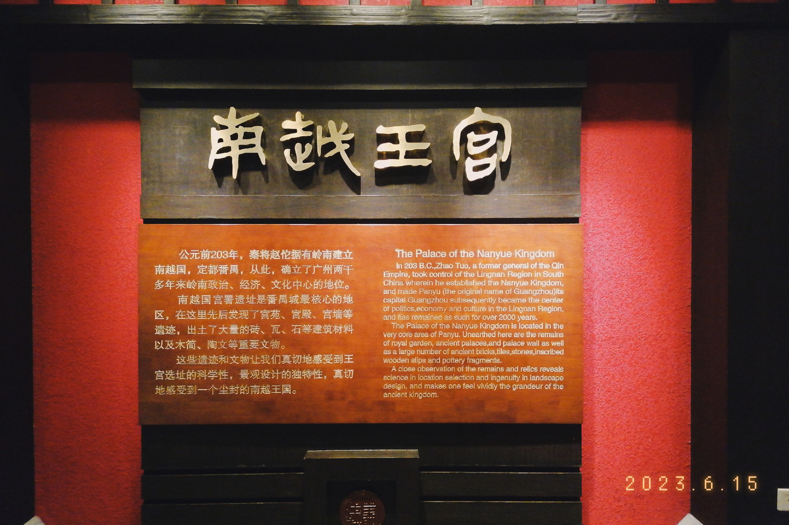
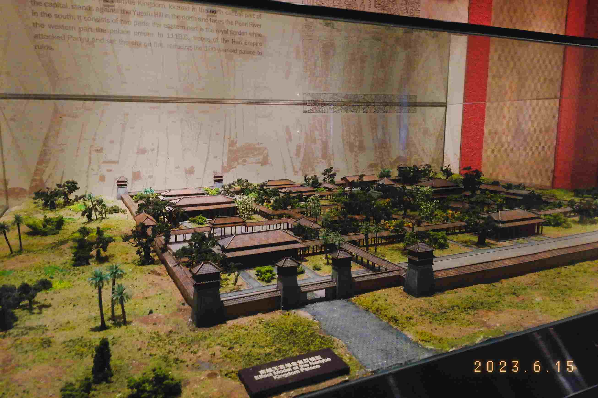
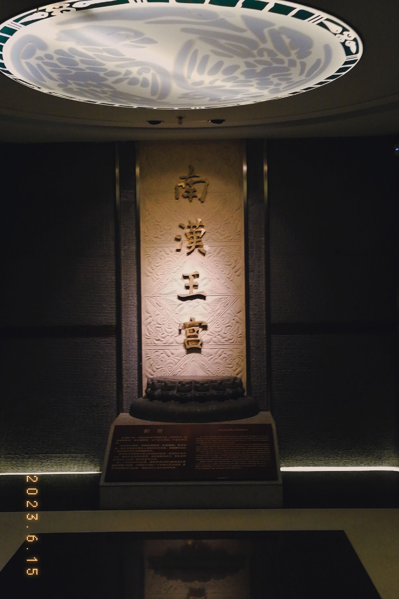
路线顺序：光塔寺（怀圣寺） → 六榕寺塔 → 广州博物馆（镇海楼） → 先贤清真寺
简介：唐代阿拉伯商人所建，伊斯兰教传入中国后最早创建的四大清真寺之一
详细介绍
总述：唐代阿拉伯商人所建，为伊斯兰教传入中国后最早创建的四大著名清真寺，其光塔（邦克塔）是古代珠江航道上重要的航标。体现唐宋时期广州与阿拉伯世界的贸易往来。
分述：（1）过程：是中国伊斯兰教著名清真寺，又称光塔寺，与泉州清净寺、杭州凤凰寺、扬州仙鹤寺并称。寺称"怀圣"，即怀念伊斯兰教先知穆罕默德圣人之意。相传由唐初来华的阿拉伯伊斯兰教传教师宛葛斯主持，为当时侨居广州的阿拉伯穆斯林商人捐资所建。根据现存碑刻记载，该寺在1350、1467、1695及1935年皆经重修。
（2）特色：现该寺由寺门、望月楼、水房、长廊、碑亭、客室、礼拜殿和光塔组成。礼拜殿为寺的主体建筑，置于庭院的正面，造形为中国宫殿式。在大殿左侧碑亭内有1350年8月郭嘉重建怀圣寺碑，保存尚好，但石质有所风化；还有清康熙及同治时重修寺的碑记。寺院的西南角，建有高达36．6米的砖塔，呈圆筒形，塔中为石心柱，塔内有石阶梯道可供登临，塔顶有"邦克楼"。塔表圆形灰饰，望之如光洁之银笔，故称"光塔"，是古代珠江航道上重要的航标。
（3）意义：该寺对研究中国海外交通史、建筑史、伊斯兰教史以及中国同伊斯兰国家人民的经济文化交流有重要意义。
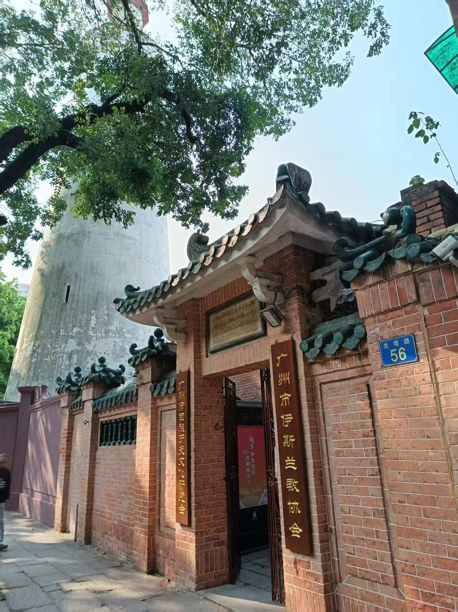
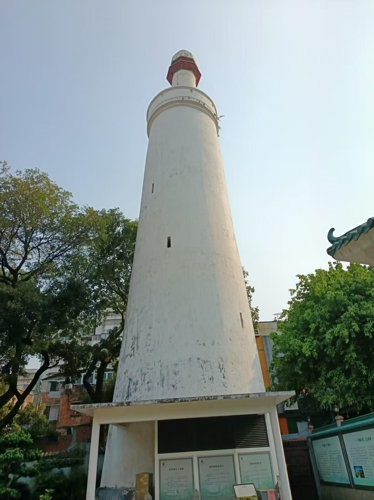
简介：唐代高僧鉴真弟子所建，塔身融合中外建筑风格，曾作为商船入穗地标
详细介绍
总述：唐代高僧鉴真弟子所建，塔身造型融合中外建筑风格，曾作为商船进入广州的地标性建筑。
分述：六榕寺塔又名六榕寺花塔、千佛塔，位于六榕寺内。原寺名宝庄严寺，五代十国时南汉改称长寿寺，后因文学家、书法家苏东坡来寺，手题"六榕"寺榜，遂称六榕寺，寺内塔则称为六榕寺塔。 六榕寺塔是梁武帝于537年下令修建，971年，花塔被大火焚毁，直到1086年才重建，此后花塔又经历多次重修。建塔之初，昙裕法师将其经由"海上丝绸之路"从扶南迎回来的佛舍利供奉在塔基地宫，宋代重建时曾挖出佛舍利，随其他珍宝一同藏在原处。六榕花塔保留了宋代建筑的形态，目前整座塔的砖头大部分是北宋的古砖，是岭南地区现存最高的宋代古塔，因此在古代是除了莲花塔、琶洲塔、赤岗塔以外的又一入穗航标。据王勃碑文记载，唐朝时花塔为四角六层，现为八角九层，内部有八层暗层，整座花塔像是花朵叠成的一根花柱，塔顶则像一朵花蕊，俯瞰宛如盛开的莲花，因此被称为花塔。六榕寺塔楼梯上有层层叠叠、具有规整几何花边的楼梯顶，如往下倾斜的拱门，这是古塔建筑中的重要工艺。
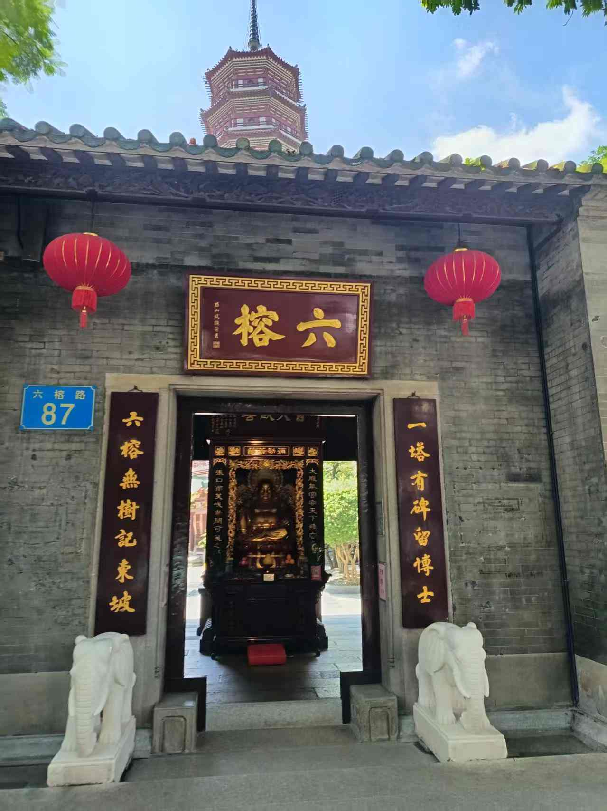
简介：明代建筑，馆藏波斯陶器、阿拉伯金币等海外遗存，展示唐宋贸易盛况
详细介绍
总述：明代建筑，"岭南第一胜概"，先后以"镇海层楼"和"越秀层楼"列为清代和现代的羊城八景之一。馆藏文物展示广州作为唐宋 "第一大港" 的贸易盛况，包括波斯陶器、阿拉伯金币等海外遗存。
分述：（1）过程：镇海楼，初名望海楼，俗称五层楼。始建于明朝洪武十三年（1380年），与明代广州城垣向北扩展到越秀山上相关。历史上曾五毁五建，明嘉靖二十四年（1545年），广东提督蔡经和总督张岳相继将毁于火劫的望海楼进行原址重建，题名为"镇海楼"，这是镇海楼正式更名。1929年，镇海楼开始成为广州市博物馆所在地，2020年，广州博物馆迁入镇海楼内。
（2）目的：军事瞭望，加强守备，因此镇海楼是广州现存最早的城防建筑；观景；镇压王气。
（3）特色：镇海楼前有雌雄2只石狮，是1912年从北京路迁移而来，其由红砂岩石雕成，东西成对，雕饰简朴古拙；雌狮在西，左前足踏球，右前足微提起抚着小狮；雄狮在东，右前足提起踩一绣球，左前足直支于地，为现存明代最大的红色砂岩石雕狮子。除此以外，馆内还有大量如外销瓷盘、威尼斯银币等反映中国古代海上贸易的藏品。
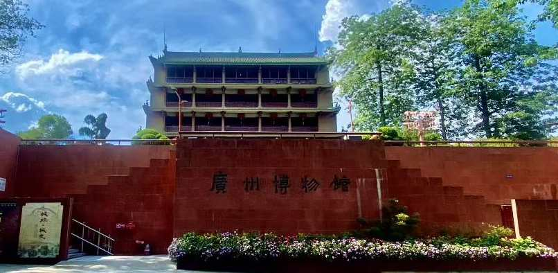
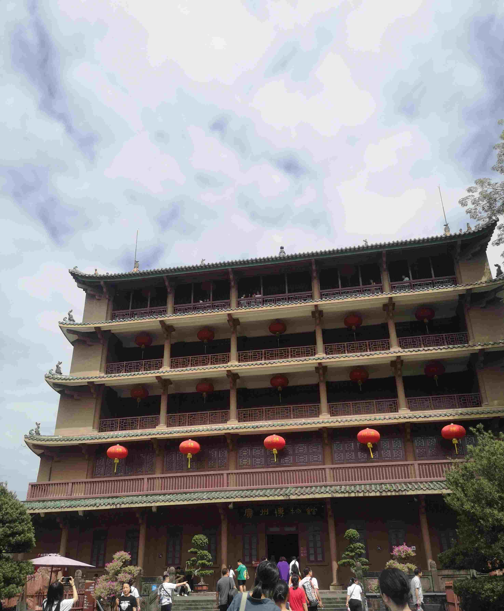
简介：中国现存最古老伊斯兰陵墓，唐宋阿拉伯-波斯商人社群的精神中心
详细介绍
总述：中国现存最古老伊斯兰陵墓，为唐宋时期阿拉伯-波斯商人社群的精神中心，见证海丝贸易群体的信仰生活
分述：（1）过程：清真先贤古墓，古称"回回坟"。唐贞观三年（629年）所建，是世界最古老的伊斯兰墓葬之一，也是阿拉伯地区以外保留下来的为数不多的穆斯林墓葬。相传伊斯兰教传教士宛葛素（又译苏哈白赛）在广州逝世后，葬于此。宛葛素是经海路抵华传教的先驱，他和随行的信徒被中国穆斯林奉为"伊斯兰先贤"，宛葛素则被奉为"大贤"，其后在先贤古墓旁修建的"四十一贤者坟墓"体现了"大贤"的影响力，除此以外还葬有一些历代有威望的教长。
（2）特色：清真先贤古墓是一座园林式的墓园，内作庭院式布局，四周绕有青砖墙垣，内有拜殿、方亭、厢房，墓园内现存的殿堂及其他建筑，均为明代风格；墓园内还保存有唐代阿拉伯式陵墓建筑、历代中外穆斯林墓碑（含波斯文碑刻）；其宗教功能延续千年（仍为礼拜场所）。
（3）意义：清真先贤古墓是伊斯兰教在广州的重要圣地，是伊斯兰教早期经由海上丝绸之路传播的见证，是研究海丝沿线人口流动与跨文化融合的实物证据，体现伊斯兰文化在广州的扎根与发展，也是中国文化以自身的习俗和传统接纳、融合外来宗教元素的体现。
路线顺序：锦纶会馆 → 华林寺 → 沙面岛（殖民贸易遗迹） → 十三行博物馆
简介：广州市唯一保留的丝织行业会馆，反映广州作为丝绸出口中心的地位
详细介绍
总述：广州市唯一保留下来的丝织行业会馆，反映广州作为丝绸出口中心的地位，是明清时代海上丝绸之路的西关见证，也是研究清代资本主义萌芽和广州商贸发展史的重要实证。
分述：（1）背景：丝绸在欧洲市场具有强大的吸引力，使专为出口服务、符合国外风尚的丝织业在广州、佛山等地发展起来，出现了统一管理的织造工厂。这是清代资本主义萌芽的表现。
（2）过程：会馆始建于1723年，道光24年（1844年）重修，1949年后改为民宅。附近都是当年专为丝绸出口服务的织造工厂。原为供奉"锦纶行"（即丝制业）祖师"汉博望张侯"的场所，后逐渐转变为广州丝织业股东的议事之所。2012年，锦纶会馆正式成为广州丝织行业博物馆。
（3）意义：馆内保存清代海外贸易契约文书和22块碑刻，对研究清时期广州的丝织业情况提供了宝贵的文史资料。
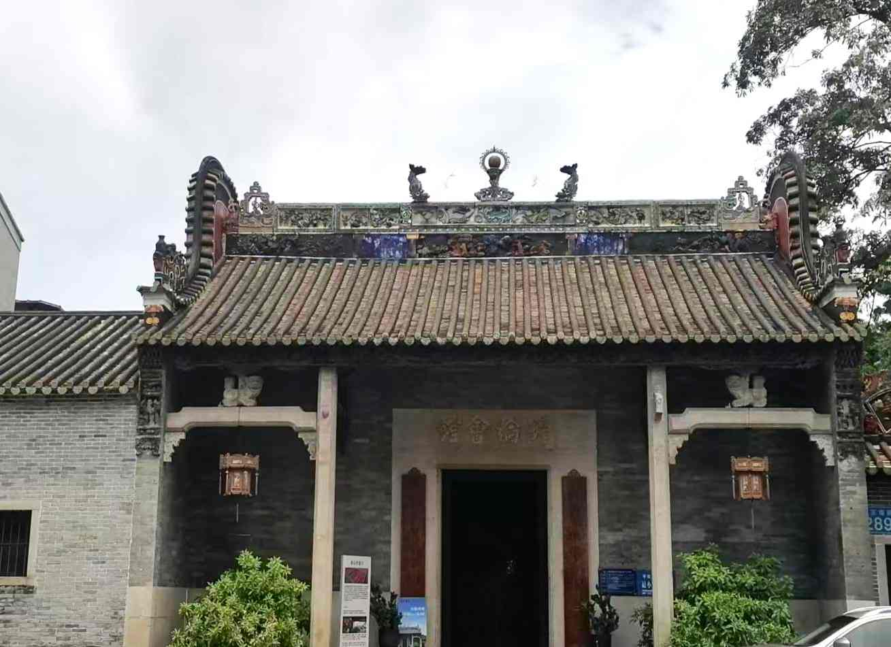
简介：禅宗祖庭之一，紧邻的玉器街是明清海丝后期重要珠宝集散地
详细介绍
总述：华林寺是禅宗祖庭之一（达摩祖师"西来初地"）。紧邻的上下九、华林玉器街区域，是明清以来繁荣的商业区，玉器贸易（尤其是翡翠）是海丝后期的重要商品之一，至今仍是重要的珠宝集散地，体现了广州作为商贸中心的延续性。
分述：（1）过程：始建于梁武帝普通八年（527年），前身是"西来庵"。达摩遵从师父自训谕，西来弘化禅宗妙旨，并于梁武帝普通年间从海上到达广州城外的珠江北岸（今下九路），"结草为庵"，潜心苦修。西来庵建成后，历隋、唐、宋、元、明、清诸代多次修葺，并经多次改建为砖木结构，"传灯不绝"，长盛不衰。该庵始建1100多年后，于清顺治十一年（1654年），庵的住持宗符禅师募资扩建，增设了禅房、僧房、大雄宝殿，又开拓庭院，广植树木、引入流水，营造起一座颇具规模的佛教丛林，面积达3万平方米，并将西来庵改名为华林寺。继宗符禅师之后，其弟子离心和尚又继续修建，苦心经营近十年，致使华林寺僧侣云集，香火鼎盛，成为当时广州佛教四大丛林之一。
（2）特色：华林寺华林寺的面积有3万平方米，由五百罗汉堂、舍利塔、达摩堂等建筑群组成。五百罗汉堂内，除供奉三宝佛外，还陈列着神态各异的泥塑五百罗汉像，其中有一尊意大利旅行家马可·波罗的木雕像。
（3）意义：是中国佛教禅宗始祖菩提达摩中印文化交流地，广州佛教四大丛林之首。
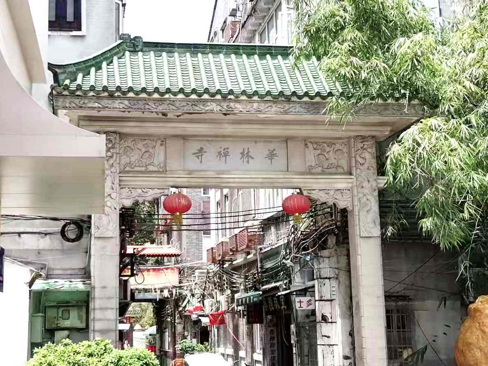
简介：19世纪英法租界，现存西洋建筑曾为洋行、领事馆，见证近代贸易转型
详细介绍
总述：19 世纪英法租界，现存西洋建筑曾为洋行、领事馆，见证近代海上贸易转型期的殖民经济印记。
分述：（1）背景：沙面岛原为珠江冲积沙洲，第二次鸦片战争后（1859年），英法通过《天津条约》强迫清政府租借沙面，将其填土筑基为人工岛，并开挖沙基涌与陆地分隔。1861年《沙面租界条约》签订后，西部4/5划为英租界，东部1/5为法租界。
（2）特色：租界内设有领事馆、银行、洋行等，成为列强在华经济与政治活动的据点，如英国汇丰银行、太古洋行、法国东方汇理银行等均在此设立机构。现存150余座欧式建筑，涵盖19世纪末至20世纪初的多种艺术风格，被称为"露天建筑博物馆"。
（3）相关历史事件：沙面见证了多起重大历史事件，如1925年的"沙基惨案"，英法军队向反帝游行队伍开枪，造成严重伤亡。这些事件使其成为近代中国民族运动的象征地之一。
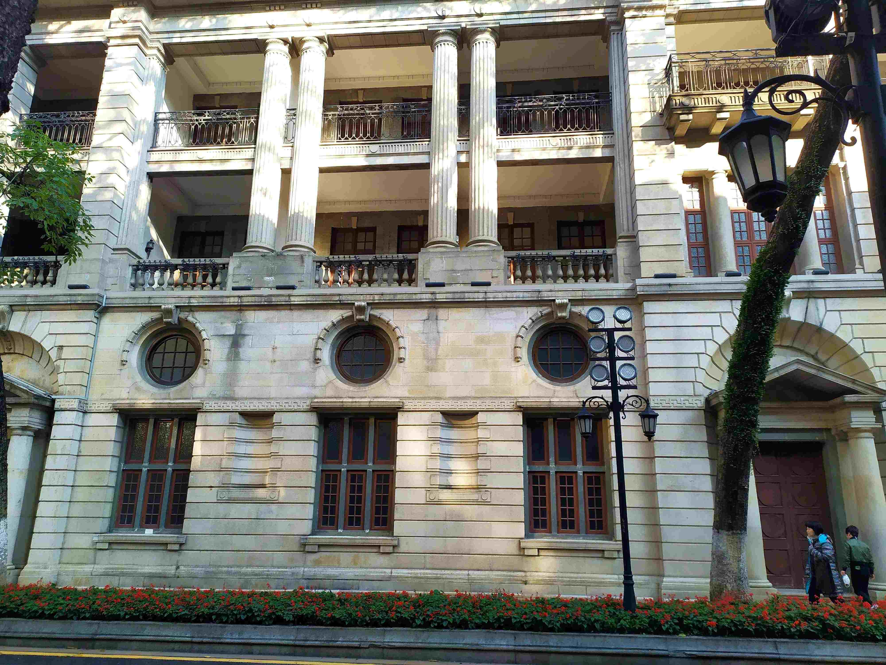
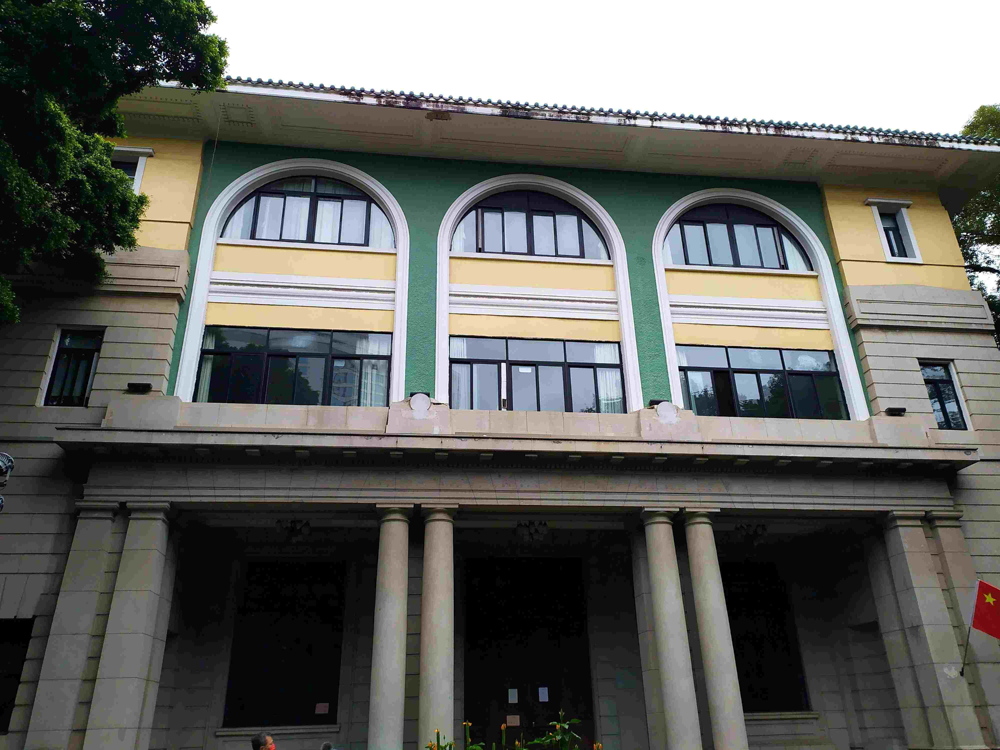
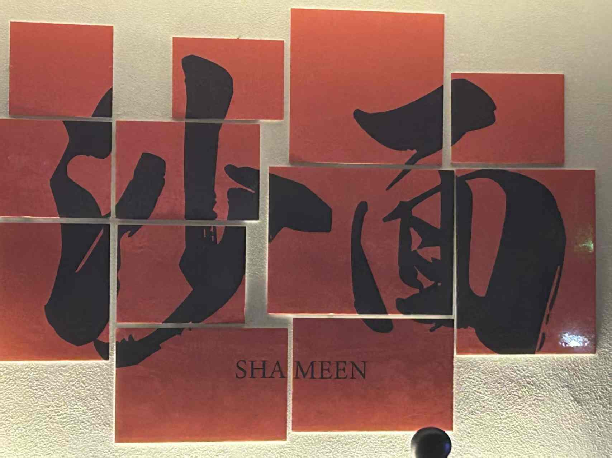
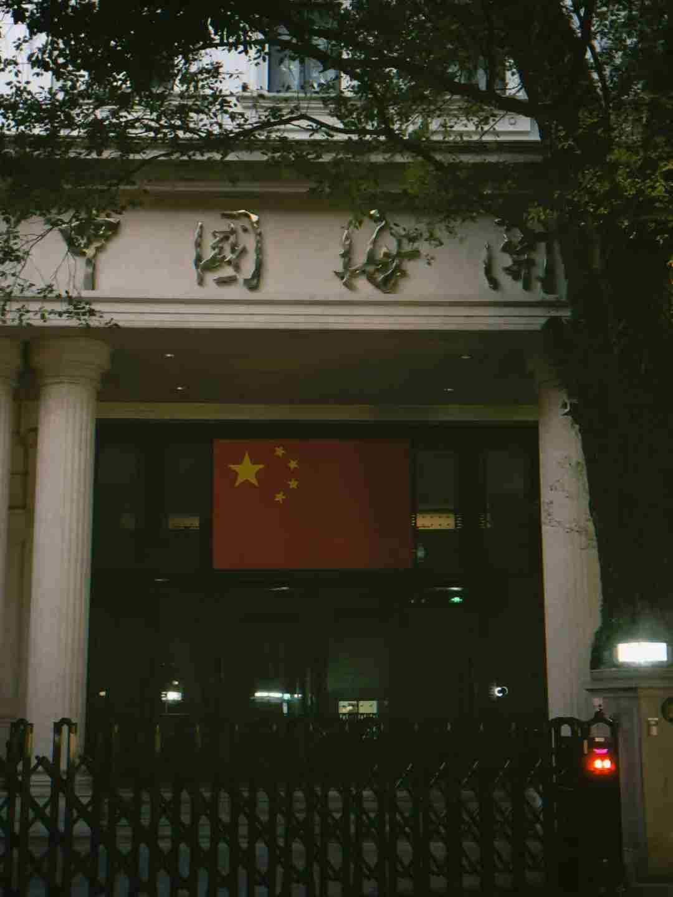
简介：展示清代广州十三行作为唯一对外贸易窗口的历史，复原商馆区场景
详细介绍
总述：展示清代 "广州十三行"作为唯一对外贸易窗口的历史，复原商馆区场景，馆藏包括外销画、瓷器和航海仪器。
分述：（1）背景：① 康熙为了振兴沿海地区长期凋敝的经济，解除了明朝以来的海禁，开放了四个口岸。② 初期，清政府并没有专门的外贸机构，导致接待西方商船的制度极为混乱。③ 广东沿海的外贸传统，培养了一批诚信、有实力的商人。
（2）过程：① 官府公开招募较有实力的商家，指定他们与外商做生意，同时代海关征缴关税，这是广州十三行组织建立的标志。也有一种说法认为十三行是从明末广东经营商业的三十六行中逐渐演变而来。② 虽然洋行数量因贸易形势而变动，但广州十三行的商户办事效率高，应变能力强，加之地理环境良好，使得广州十三行的实力与收入远超其它三个口岸。③ 由于洋商企图进一步打开中国市场，使得乾隆皇帝出于海防的考虑，实施了"一口通商"政策，使广州十三行成为当时中外经济文化交流的中心。④ 后期由于清政府大肆铺张，官员强制征税，外商高利贷，使广州十三行走向倒闭。鸦片战争后，十三行垄断对外贸易的制度被废除
（3）意义：① 广州十三行堪称天子南库，为宫廷提供大量税收与精美的舶来品，是盛清时期繁荣的中西贸易中心。② 造就了清代中国的三大商人集团之一的十三行商人。
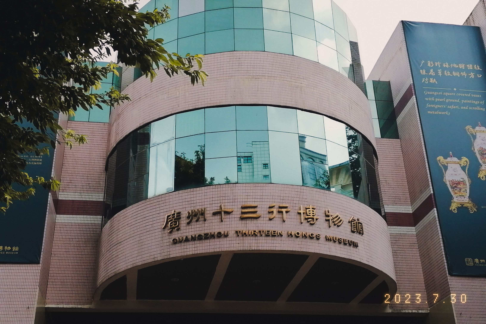
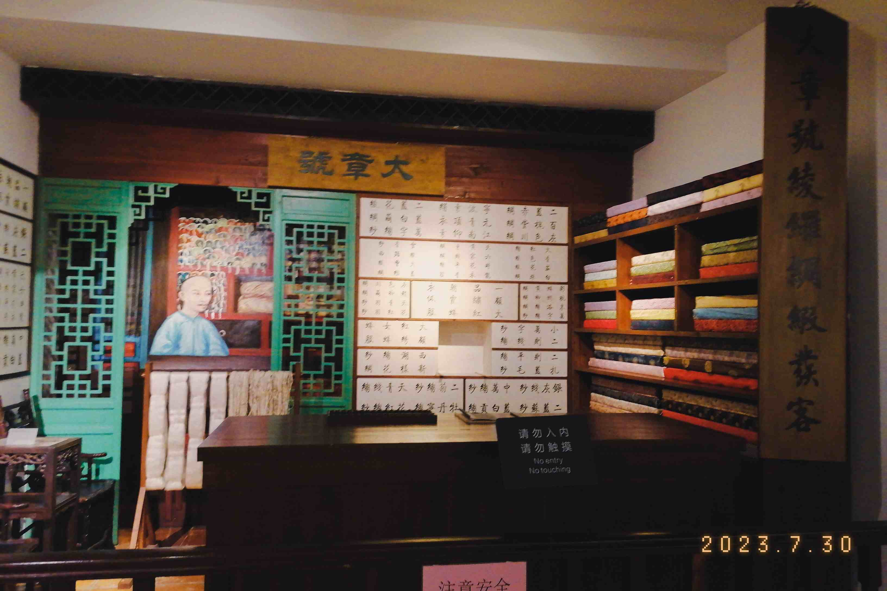
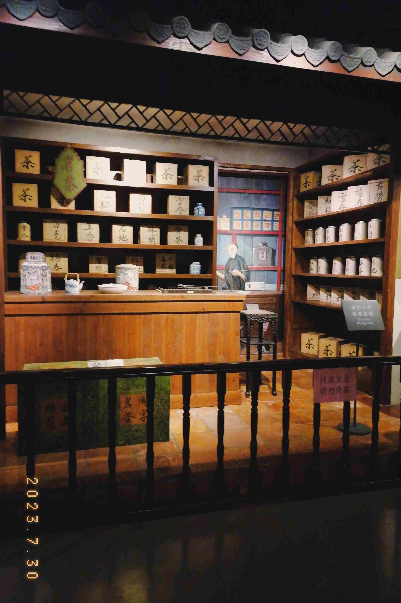
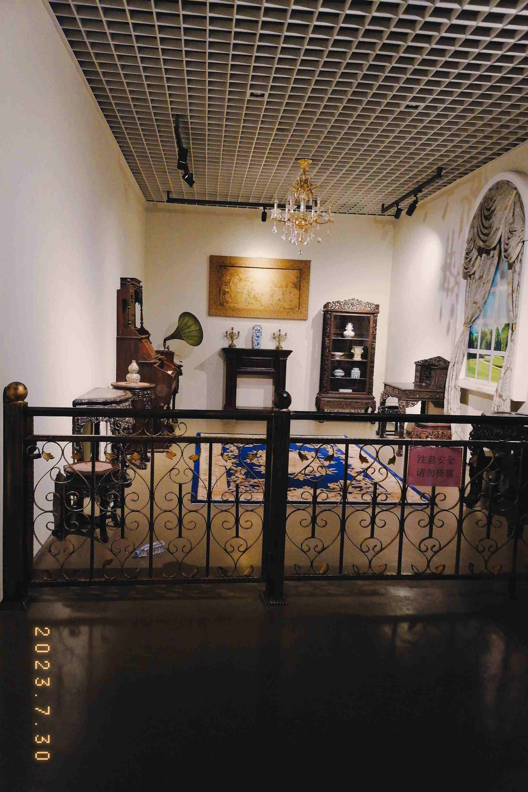
路线顺序：广东省博物馆 → 广州海事博物馆 → 南沙国际邮轮母港
简介：综合性博物馆，馆藏大量海丝相关珍贵藏品，系统展现贸易与文化交流盛况
详细介绍
集文物收藏、保护、研究、展示、教育于一体的综合性博物馆，馆藏文物中包含大量与海上丝绸之路相关的珍贵藏品（如出水古船文物、外销陶瓷、海外贸易货币等），系统展现了广东地区在海上丝绸之路不同历史时期的贸易、文化交流盛况，是了解海丝文化的重要窗口。
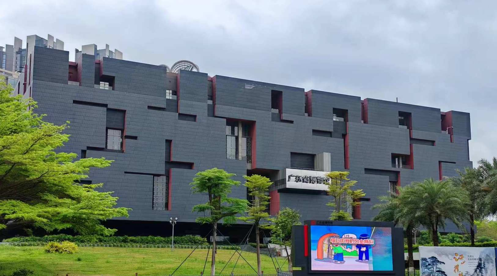
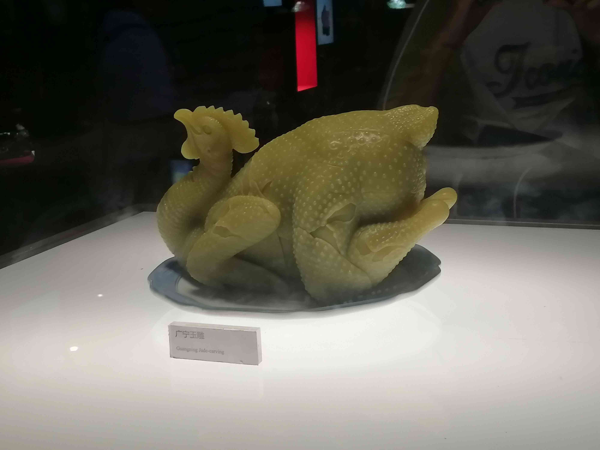
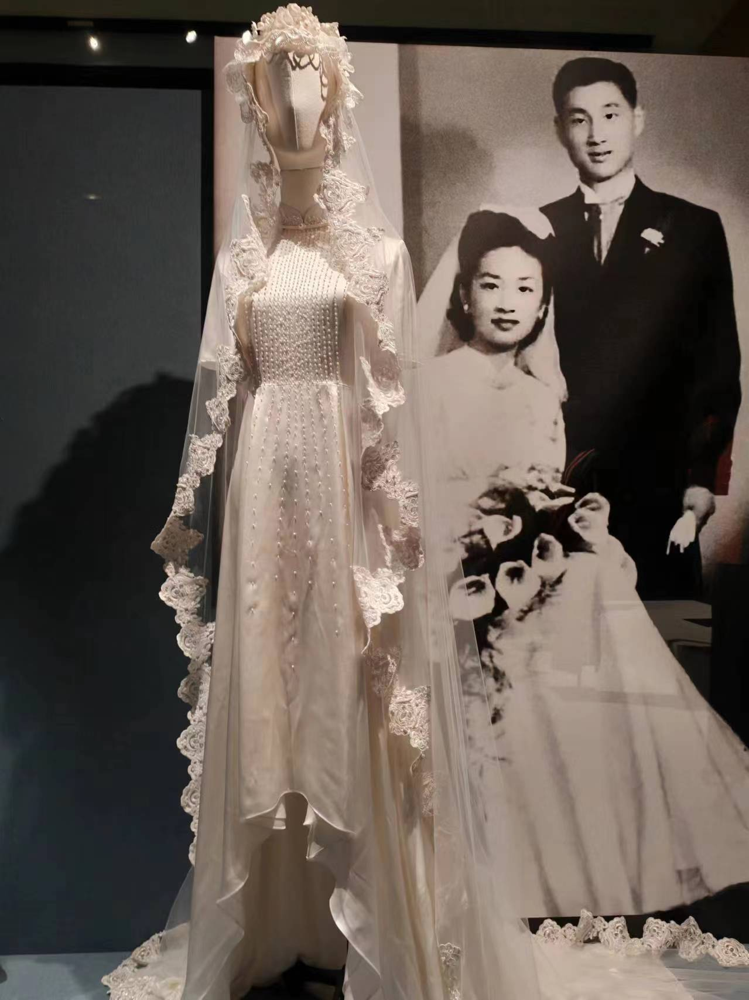
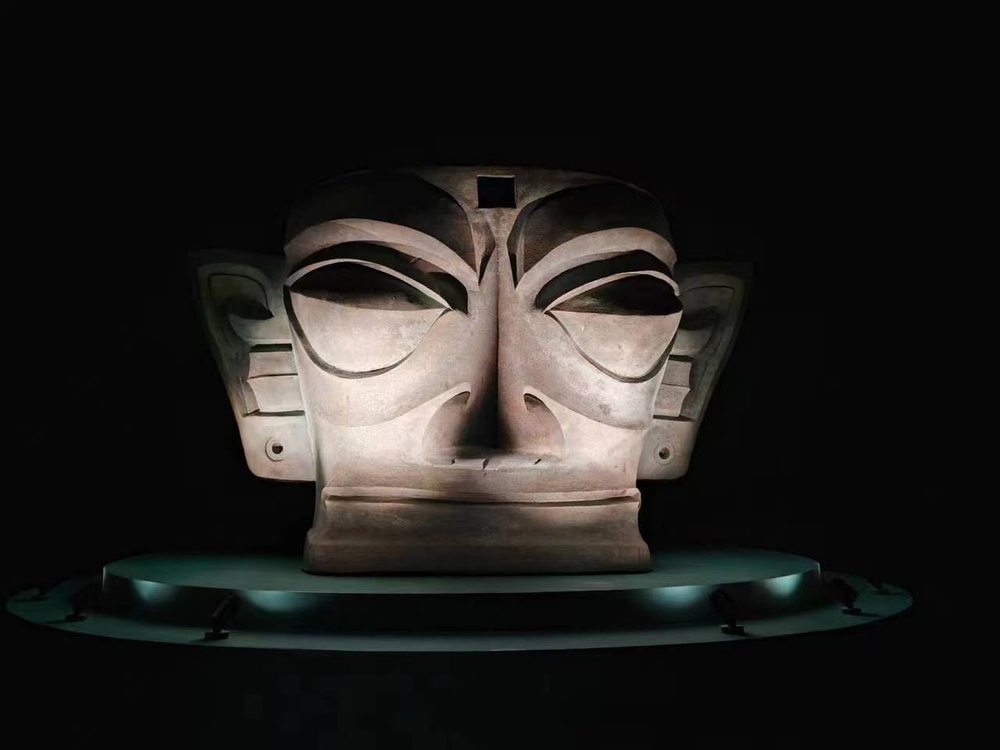
简介：广东省唯一海事专题博物馆，以海上丝绸之路为主题，展出沉船文物等
详细介绍
总述：是广东省目前唯一的海事专题博物馆，以 "海上丝绸之路" 为主题，展出沉船文物、航海地图和历代贸易文献，兼具科普与文化展示功能。
分述：（1）目的：通过展示广州在海上丝绸之路历史中的辉煌成就，重现"千年商都"的历史风貌，并推动国家"一带一路"倡议的实施。
（2）过程：于2021年建成开馆。
（3）特色：藏有西村窑瓷器近百件，堪称国内收藏西村窑完整器物之最，尤为值得一提的是，"至和元年"款褐彩铭文盘，是国内独一无二的带铭文西村窑瓷器，具有极高的历史和文化价值；珍藏了全国仅存的两件出土宋代市舶使墓志铭之一，即广州市舶使方慎言的墓志铭；馆内还展出了南宋碇石，其稀有程度在国内亦属罕见；此外，博物馆还收藏了大量中国南海出水的香药。
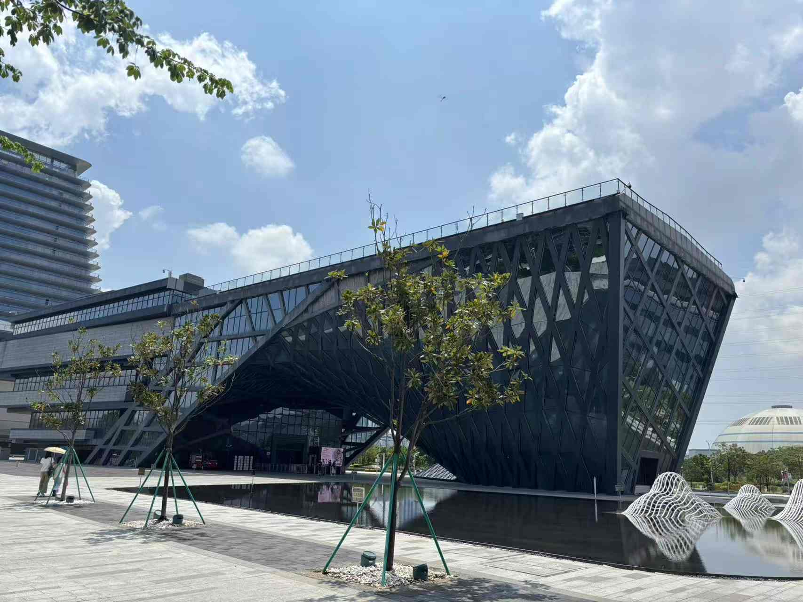
简介：现代海上交通枢纽，可参观邮轮码头设施，体验当代国际航运贸易繁荣
详细介绍
总述：现代海上交通枢纽，可参观邮轮码头设施，体验当代国际航运贸易的繁荣景象。
分述：（1）背景：① 广州原有港口装卸能力和水道逐渐无法满足现代航运的发展，因此从2001年起，广州开始在南沙进行新港口建设。② 2013年，歌诗达邮轮·维多利亚号曾在广州南沙港停泊，成为广州乃至华南地区第一艘靠岸停泊、搭载旅客的国际邮轮；2015年，广州开始布局国际邮轮业务，通过改扩建广州港南沙集装箱三期码头开展起国际邮轮业务。
（2）过程：2016年8月，广州南沙国际邮轮母港项目开工。2019年11月17日，广州南沙国际邮轮母港开港。2019年11月17日，广州南沙国际邮轮母港举行开港活动，宣布运营。歌诗达邮轮"新浪漫"号开启了从广州南沙到日本八重山诸岛的首航之行。2024年6月25日上午7时，"蓝梦之歌"邮轮靠泊广州南沙邮轮母港，意味着南沙国际邮轮母港开航。2024年12月18日，广州南沙国际邮轮母港正式开启邮轮常态化运营。
（3）意义：在邮轮旅游、邮轮产业发展、邮轮政策、邮轮文化等方面大力推进粤港澳大湾区邮轮产业链，推动广州宜居宜业宜游城市建设和航线周边旅游、产业的经济发展。
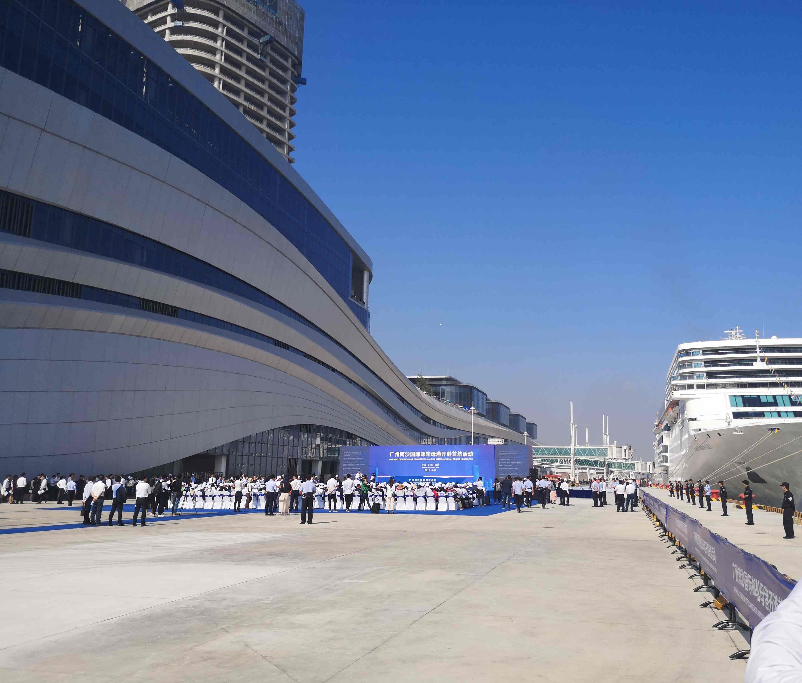